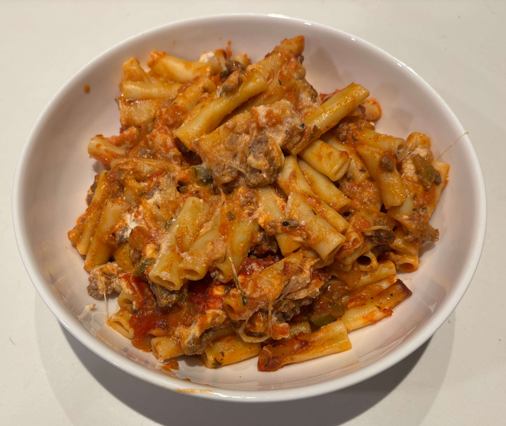

Home
Baked Ziti

Ingredients
- 1 lb ziti
- 1 30 oz jar sauce
- Small jar ricotta cheese
- 1 bag shredded mozzerella cheese
- Peppers
- Onions
- 1 lb ground beef
Steps
- Cook the ziti according to the instructions on the package and drain
- Brown the ground beef and add the peppers and onions towards the end
- Combine the ziti, peppers, onions, and 1/2 jar of sauce
- Spread half the ziti mixture into greased oven safe pan, sprinkle cheese, add rest of ziti mixture, sprinkle more mozzerella and cover with sauce
- Bake 375 degrees for 45 min or until bubbly